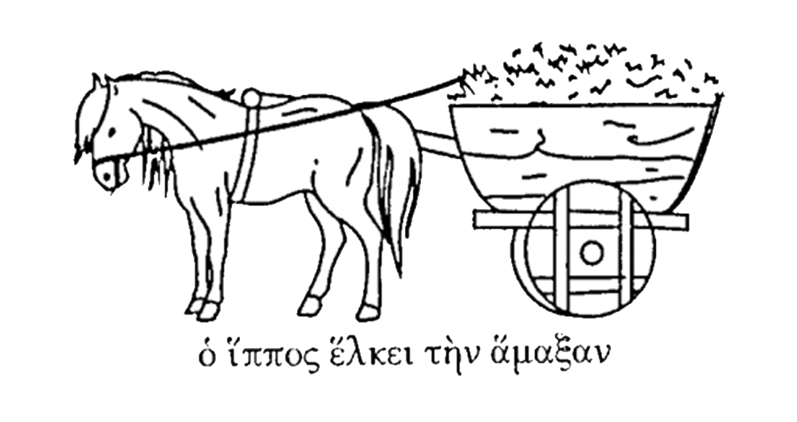

H KΩMH KΑI H OIKIΑ
Tὸ χωρίον εν ᾧ οικοῦμεν εγγὺς κώμης εστίν. Ἆρ’ αγνοεῖς τί εστι κώμη; Λέγω δή· εισὶ μὲν οικίαι εν τῇ κώμῃ, οἱ δ’ εν τῇ κώμῃ άνθρωποι κωμηταί εισι. Kαὶ εν τῇ ἡμετέρᾳ κώμῃ αγορά εστιν· μικρὰ μὲν ἡ κώμη, μικρὰ δὲ καὶ ἡ αγορά· καὶ δὴ καὶ μικρόν εστι τὸ χωρίον ἡμῶν. Kαὶ εν τῇ αγορᾷ αγοράζουσι μὲν οἱ αγορασταί, πωλοῦσι δὲ οἱ πωληταί.
Εγὼ δὲ μικρός ειμι, αλλὰ ἡ τροφός μου ούκ εστι μικρὰ, ουδὲ μικροὶ οἱ λόφοι, οἳ περιέχουσι τὴν μικρὰν κώμην· ὑψηλοὶ γάρ εισιν οἱ λόφοι. Ἡ δ’ οικία ἡμῶν εστὶ μεγάλη, επειδὴ πολλοί εσμεν, αλλ’ ου πλούσιοι.
Πρῶτον μὲν εκ τῆς ὁδοῦ ὁρῶμεν τοῖχον μέγαν τῆς οικίας ἡμῶν, καὶ εν τῷ τοίχῳ δύο πύλας· τῆς ἡμέρας ανεῳγμέναί εισιν αἱ πύλαι. Εντὸς δὲ τῶν πυλῶν ὁρῶμεν μεγάλην αυλὴν, καὶ εν τῇ αυλῇ τὰ ορνίθια, καὶ δὴ καὶ ίσως άλλα ζῴα, ὴ ἵππον ὴ όνον ή ἡμίονον.
Ὁ μὲν ἵππος ἕλκει τὴν ἅμαξαν· ὁ δ’ όνος ὅμοιος ἵππῳ εστίν, αλλὰ διαφέρει ολίγον· μικρότερος γάρ εστι καὶ μιαρὰν ἔχει τὴν φωνὴν καὶ εσθίει ακάνθας. Ὁ δὲ ἡμίονος τέκνον ἵππου καὶ όνου εστίν. Tαῦτα οῦν εν τῇ αυλῇ ὁρᾷς· ορνίθια καὶ ίσως ἵππον ὴ όνον καὶ ἅμαξαν.

Εκ δ’ αριστερᾶς τῆς αυλῆς καὶ εκ δεξιᾶς εισὶ μικροὶ οικίσκοι ὴ δωμάτια, εν οἷς έχομεν τὴν τροφὴν τοῖς ζῴοις, καὶ δὴ καὶ άλλα πολλά. Εναντίον δὲ ὁρᾷς τὸν πρόδομον· ούκ εστι κεκλῃμένος ὁ πρόδομος, αλλὰ ανεῳγμένος.
Ένδον δ’ εν τῇ οικίᾳ εισὶ τράπεζαι καὶ κλῖναι καὶ δίφροι. Επὶ μὲν τῆς τραπέζης εστὶν ὅσα εσθίομεν τε καὶ πίνομεν· λέγω σιτία καὶ οῖνον καὶ τὰ άλλα. Καθίζομεν μὲν επὶ τῶν δίφρων. Επὶ δὲ τῶν κλινῶν καθεύδομεν· τὸ θέρος καθεύδομεν έξω εν τῷ προδόμῳ ὴ επὶ τῆς στέγης.
ΚΑΘ’ ἩΜΕΡΑΝ
Εσθίομεν τρὶς τῆς ἡμέρας· πρῲ μὲν εσθίομεν ολίγον άρτον τε καὶ πίνομεν γάλα ὴ οῖνον· έπειτα δὲ πρὸ τῆς μεσημβρίας αριστῶμεν· εῖτα δὲ τῆς ἑσπέρας δειπνοῦμεν. Τὸ μὲν πρῶτον ολίγον εστὶ καὶ ονομάζομεν τοῦτο ακράτισμα· τὸ δὲ δεύτερον λέγομεν άριστον, τὸ δὲ τρίτον εστὶ δεῖπνον. Μετὰ δὰ ταῦτα λαλοῦμεν μετ’ αλλήλων, καὶ καθεύδομεν τῆς νυκτός.
Αριθμῶ μὲν τοὺς εν τῇ οικίᾳ ανθρώπους· πέντε εσμέν. Αριθμῶ δὲ τὰ τῆς οικίας οικήματα· καὶ δέκα εστίν. Αριθμῶ δὲ καὶ τοὺς δίφρους ὅσοι ένεισι· καὶ οὗτοι είκοσίν εισιν.
Τὰς δὲ κλίνας αριθμῶ· εισὶ δ’ ἕξ. Τὰς δὲ τραπέζας αριθμῶ· τρεῖς εισιν.
Γιγνώσκεις δὴ ὁπόσα δωμάτιά εστιν εν τῇ ἡμετέρᾳ οικίᾳ· λέγω γὰρ αῦθις ὅτι δέκα. Εισὶ δὲ καὶ εν αυτῇ δίφροι, εφ’ ὧν καθίζομεν, καὶ κλῖναι, εν αἷς καθεύδομεν, καὶ τράπεζαι, εφ’ ὧν εστι τὰ σιτία καὶ ὁ οῖνος· τὰ μὲν σιτία εσθίομεν, τὸν δ’ οῖνον πίνομεν. Ποτήρια μέν εστιν ἡμῖν εξ ὧν πίνομεν, λεκάναι δὲ εξ ὧν εσθίομεν τὰ σιτία. Καὶ ποῖά εστιν ἡμῖν τὰ σιτία; Άρτος μὲν καὶ μᾶζα, μετὰ ταῦτα τυρὸς λευκός, καὶ ῳὰ καὶ ορνίθια, καὶ δὴ καὶ άλλα. Τὰ δ’ εκ τοῦ κήπου εσθίομεν· λάχανα καὶ καρπούς: σταφυλάς τε καὶ σῦκα καὶ ελαίας.